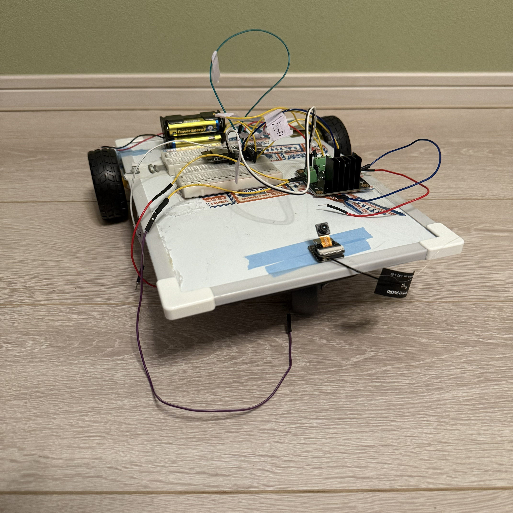

seeed xiao esp32 s3で遊んでみる。

今まではラズベリーパイにカメラをつなげてラズパイの中でYOLOを起動して頑張ってもらっていたが、大きな問題に当たった。ラズパイの給電方法である。どうも普通に使う分にはスマホのモバイルバッテリーで対応できるが、YOLOまで起動すると落ちてしまうらしい、というか落ちる。
ラズパイからESP32への移行

ということでラズパイはとりあえずお役御免として、eps32のカメラモジュールを買うことにした。esp32 →僕の持っているPC→処理→実際の動作 という流れだ。こうすればロボットに積むのはモバ充で十分だろう。
アリババでesp32camを買おうとするも、レビューで酷評or在庫切れしかなかった。そこで代替として探しているときに見つけたのがこのseeed Studioの xiao esp32 Senseだ。正直esp32camと大差はないし、実際に使っていてなにか不便なこともない。

少しesp32camよりかは割高ではあるが、アリババで動かない鉄くずを10個単位で買って、ゴールドラッシュの如く嗚呼やっと一つ正常に動くものがあった...なんてことをするよりだいぶましだろう。

日頃からお世話になっている秋月で購入させていただいたが、やはり早い。多分数百個単位で秋葉原店のレジの奥にしまってあるのだろう。
実際に試してみる
届いたところで試してみよう。
試してみたが、かなり怪しい映像となってしまった。戦闘用ドローンのフィードみたいだ。
ただすぐ熱くなるのが欠点。焦げるほどでもないし問題はない。

実際に載せてみる。
